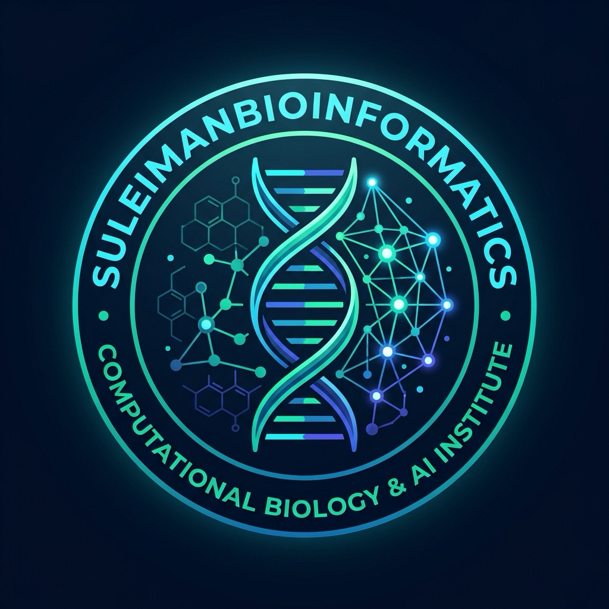

Suleiman Hajizadeh
Researcher at the Institute of Molecular Biology and Biotechnologies (IMBB), Azerbaijan. Specializing in high-throughput transcriptomics, oncogenomic clinical modeling, macromolecular biophysics, and applying Cambridge mathematical machine learning theory to biological sequences.
Founder and lead architect of the SuleimanBioinformatics organization, establishing open-access biocomputational suites, 30-module Biopython mastery curricula, and compounding knowledge vaults.
[Private] Data & Research Access Policy
Məlumatların Məxfiliyi və Çıxış Siyasəti (Azerbaijani & English)
AZ: SuleimanBioinformatics təşkilatının əsas elmi dataları, arxa plan (backend) alqoritmik skriptləri, Biopython kurrikulumunun tam həlləri və Obsidian bilik bazası (SuleimanBioinformatics/SuleimanBioinformatics) qapalıdır (Private). Bu, davam edən elmi tədqiqatların və əqli mülkiyyətin qorunması məqsədi daşıyır.
EN: The core backend repository, datasets, raw sequencing files, and the 76-page research vault are maintained as a Private Repository. If you are an academic researcher, prospective collaborator, or reviewer seeking access, please send an inquiry with your institution and intended research scope to: